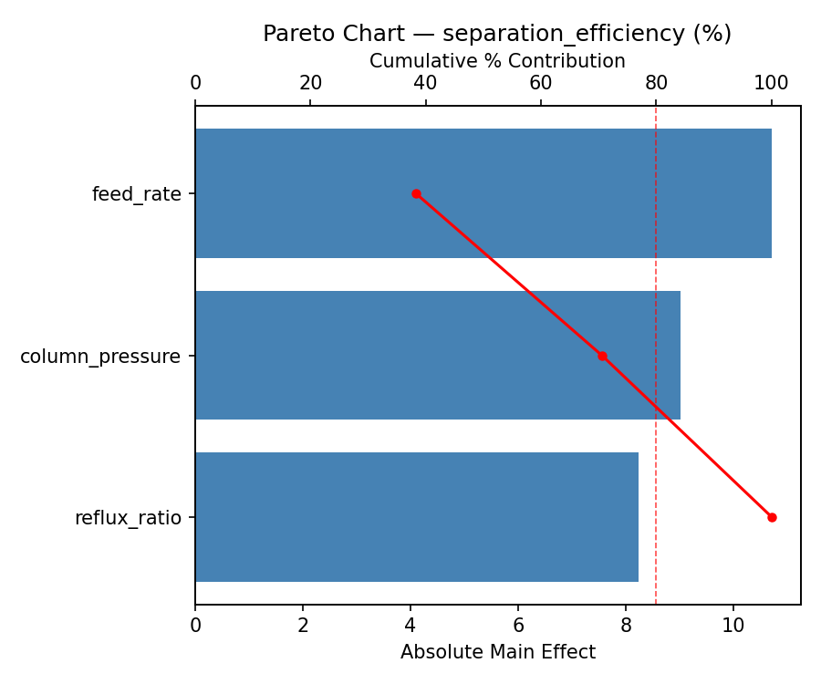
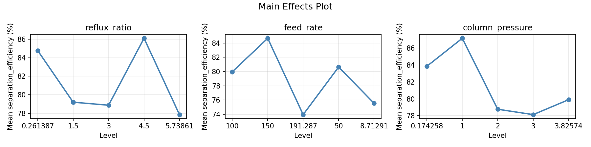
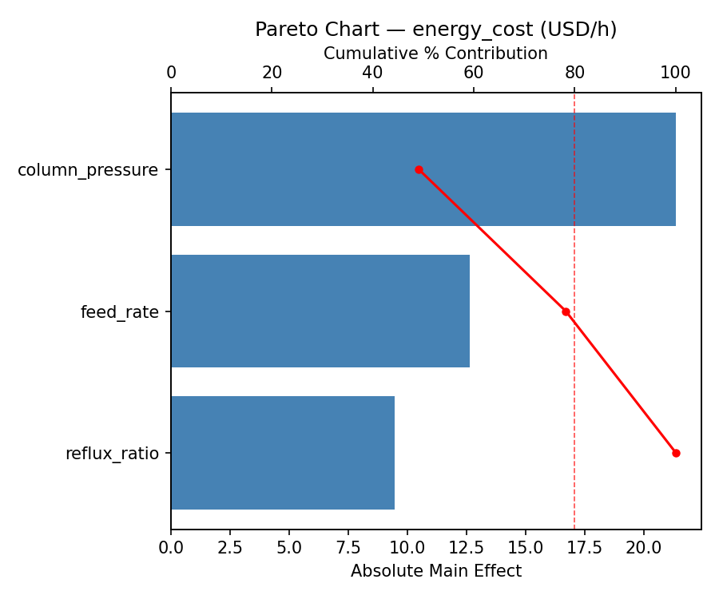
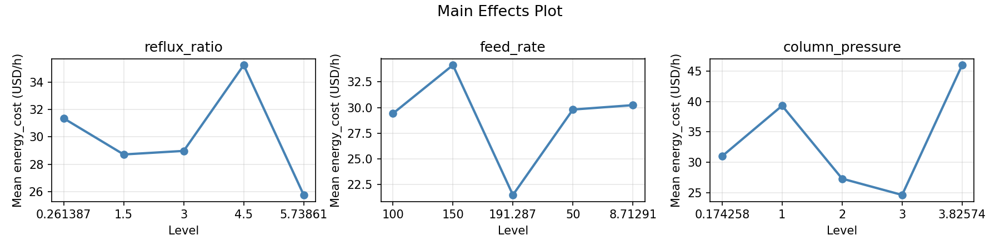
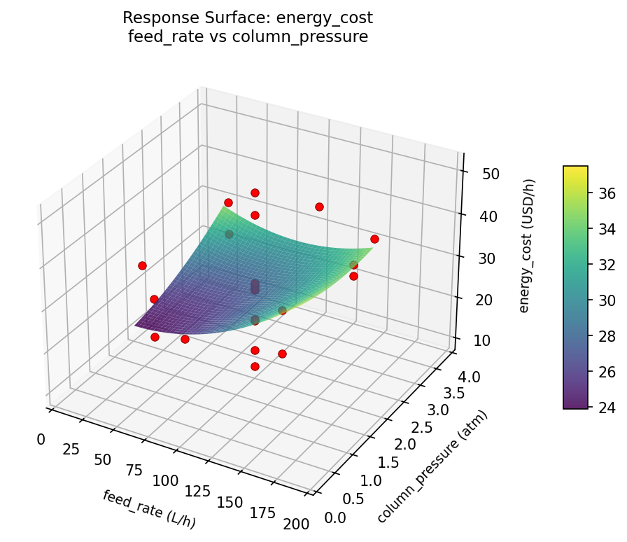
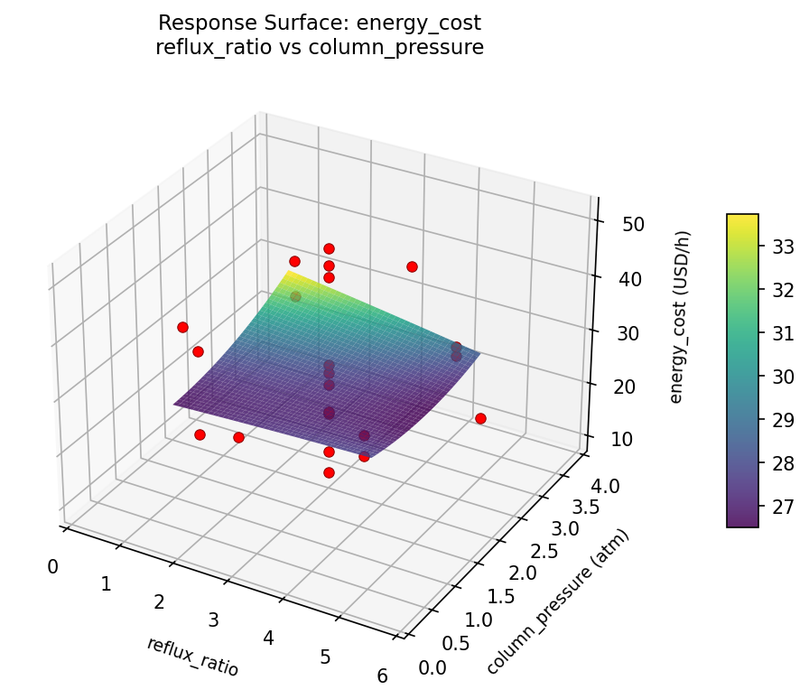
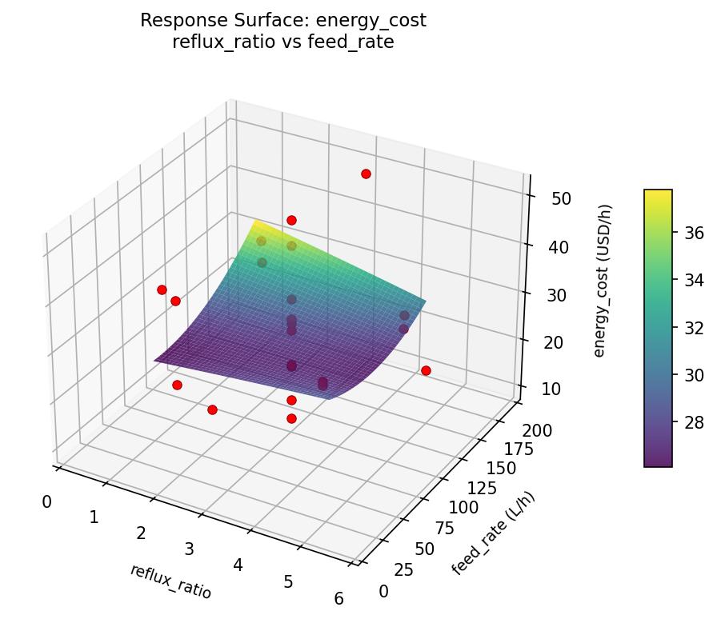
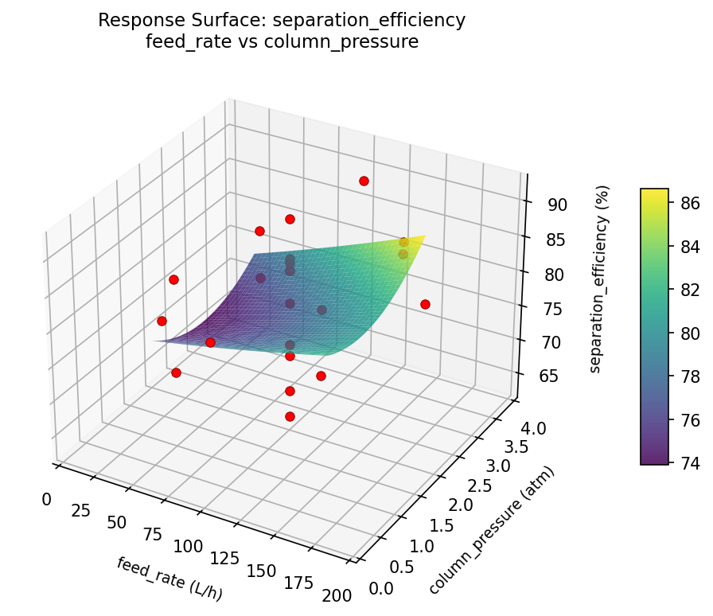
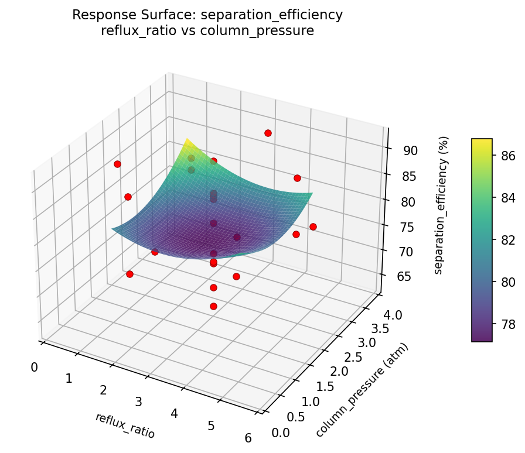
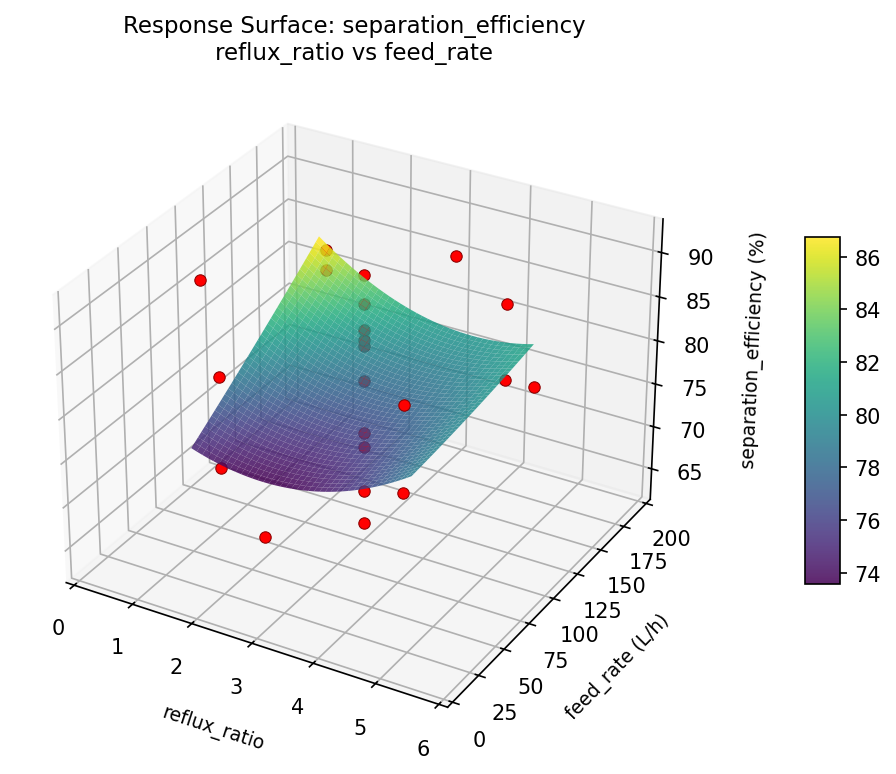

Full pipeline with CCD: star points, center replicates, quadratic RSM, and single-response optimization.
You are optimizing a distillation column for maximum separation efficiency at minimum energy cost. You suspect the response surface is curved (quadratic), so you need a design with star points and center points to fit a second-order model.
CCD = factorial (23=8) + star (2×3=6) + center (8) = 22 runs. Star points at ±α extend beyond the factorial cube to probe curvature. Center replicates estimate pure error. Orthogonal alpha ensures balanced estimation of all model terms.
| Factor | Low | High | Unit |
|---|---|---|---|
reflux_ratio | 1.5 | 4.5 | L/D |
feed_rate | 50 | 150 | L/h |
column_pressure | 1.0 | 3.0 | atm |
Fixed: feed_temp = 80°C, n_trays = 20
| Response | Direction | Unit |
|---|---|---|
separation_efficiency | ↑ maximize | % |
energy_cost | ↓ minimize | USD/h |
The Central Composite Design produces 22 runs. Each row is one experiment with specific factor settings.
| Run | reflux_ratio | feed_rate | column_pressure |
|---|---|---|---|
| 1 | 3 | 100 | 2 |
| 2 | 4.5 | 50 | 3 |
| 3 | 1.5 | 150 | 1 |
| 4 | 3 | 191.287 | 2 |
| 5 | 3 | 100 | 2 |
| 6 | 0.261387 | 100 | 2 |
| 7 | 3 | 100 | 0.174258 |
| 8 | 3 | 100 | 2 |
| 9 | 4.5 | 150 | 1 |
| 10 | 5.73861 | 100 | 2 |
| 11 | 3 | 100 | 2 |
| 12 | 3 | 8.71291 | 2 |
| 13 | 3 | 100 | 2 |
| 14 | 1.5 | 50 | 3 |
| 15 | 3 | 100 | 2 |
| 16 | 4.5 | 50 | 1 |
| 17 | 3 | 100 | 3.82574 |
| 18 | 4.5 | 150 | 3 |
| 19 | 3 | 100 | 2 |
| 20 | 1.5 | 50 | 1 |
| 21 | 1.5 | 150 | 3 |
| 22 | 3 | 100 | 2 |
This use case demonstrates the full pipeline — every command the tool offers:
Some runs have factor values outside the [low, high] range (e.g., reflux_ratio below 1.5 or above 4.5). This is the CCD's circumscribed design: the factorial cube is inscribed within the star points. Make sure your equipment can handle these extended ranges.
--response flagCompare optimize --response separation_efficiency (ignores cost) vs. optimize (all responses). The settings that maximize efficiency often increase energy cost. This reveals the Pareto frontier — the set of optimal trade-offs.
| Feature | Value |
|---|---|
| Design type | central_composite (circumscribed, orthogonal α) |
| Factor types | continuous (all 3) |
| Star points | Yes (extends beyond [low, high]) |
| Center replicates | 8 center points for error estimation |
--response | Single-response optimization |
--csv | Export for custom modeling |
| Full pipeline | info → generate → run → analyze → optimize → report → csv |
| Total runs | 22 (8 factorial + 6 star + 8 center) |
Generated from actual experiment runs using the DOE Helper Tool.
The Pareto chart identifies which column parameters most strongly influence separation efficiency.
Pareto Chart

Main Effects Plot

Energy cost responds to a different set of column parameters, requiring careful optimization against separation efficiency.
Pareto Chart

Main Effects Plot

3D surfaces fitted with quadratic RSM. Red dots are observed data points.
Each plot shows predicted response (vertical axis) across two factors while other factors are held at center. Red dots are actual experimental observations.
separation_efficiency (%) — R² = 0.312, Adj R² = -0.204
Weak fit — interpret the surface shape with caution.
Curvature detected in reflux_ratio, column_pressure — look for a peak or valley in the surface.
Strongest linear driver: column_pressure (decreases separation_efficiency).
Notable interaction: reflux_ratio × feed_rate — the effect of one depends on the level of the other. Look for a twisted surface.
energy_cost (USD/h) — R² = 0.277, Adj R² = -0.265
Weak fit — interpret the surface shape with caution.
Curvature detected in column_pressure, reflux_ratio — look for a peak or valley in the surface.
Strongest linear driver: reflux_ratio (decreases energy_cost).
Notable interaction: reflux_ratio × feed_rate — the effect of one depends on the level of the other. Look for a twisted surface.
energy: cost feed rate vs column pressure

energy: cost reflux ratio vs column pressure

energy: cost reflux ratio vs feed rate

separation: efficiency feed rate vs column pressure

separation: efficiency reflux ratio vs column pressure

separation: efficiency reflux ratio vs feed rate
